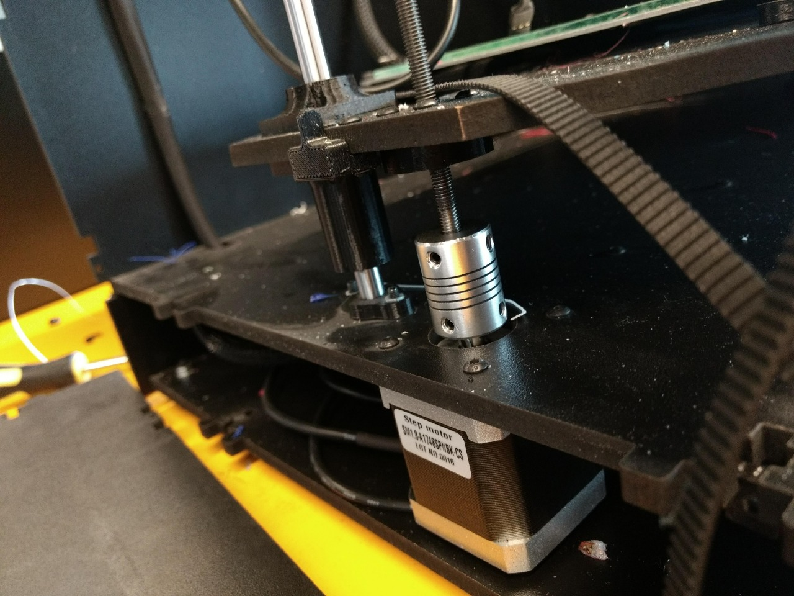

Projetos desenvolvidos por Robert Kahn
Quer saber quais são os projetos interessantes de engenharia? Todos os projetos desenvolvidos por Robert Kahn estão disponíveis aqui!
Quer saber quais são os projetos interessantes de engenharia? Todos os projetos desenvolvidos por Robert Kahn estão disponíveis aqui!